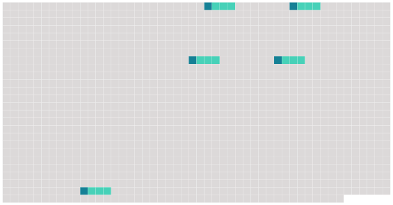

Longueur nb maillons : 5 mentions |
|
Dans le transport des passagers, un titre de transport individuel ou collectif doit être délivré, contenant : [14 phrases]
Article 5 [26 phrases]
L'expéditeur a le droit, à la condition d'exécuter toutes les obligations résultant du contrat de transport, de disposer de la marchandise, soit en la retirant à l'aéroport de [départ ou de destination] , soit en l'arrêtant en cours de route lors d'un atterrissage, soit en la faisant livrer au lieu de destination ou en cours de route à une personne autre que le destinataire initialement désigné, soit en demandant son retour à l'aéroport de départ, pour autant que l'exercice de ce droit ne porte préjudice ni au transporteur, ni aux autres expéditeurs et avec l'obligation de rembourser les frais qui en résultent. |
 |
Il est possible de télécharger la ressource sur la page Ortolang |
Si vous avez des questions ou vous voyez des erreurs, merci d'envoyer un mail à silvia.federzoni89@gmail.com |